The World
Scholar's Cup
A global celebration of learning, creativity, and friendship where students compete, collaborate, and discover new strengths across four exciting events in six subject areas.

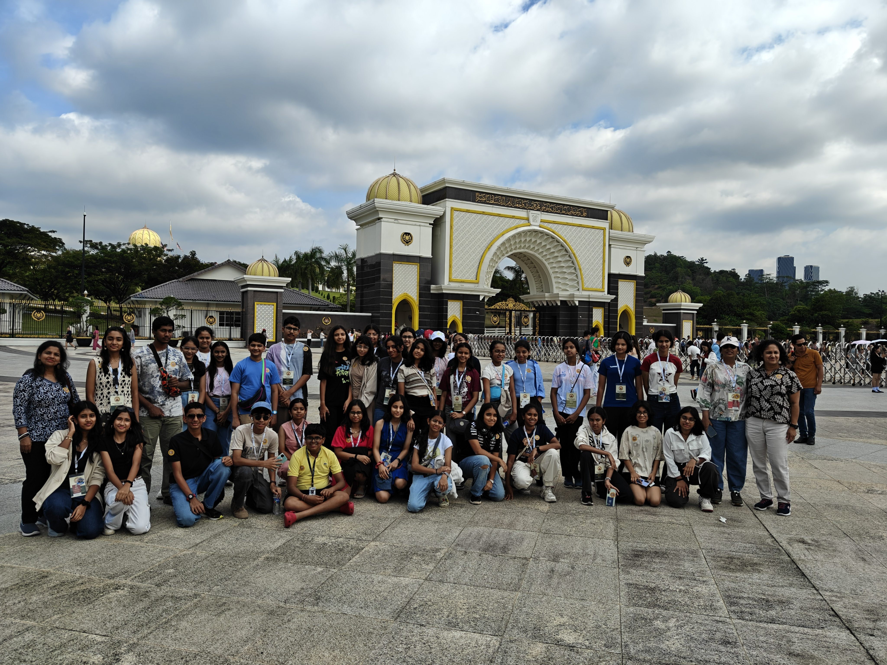

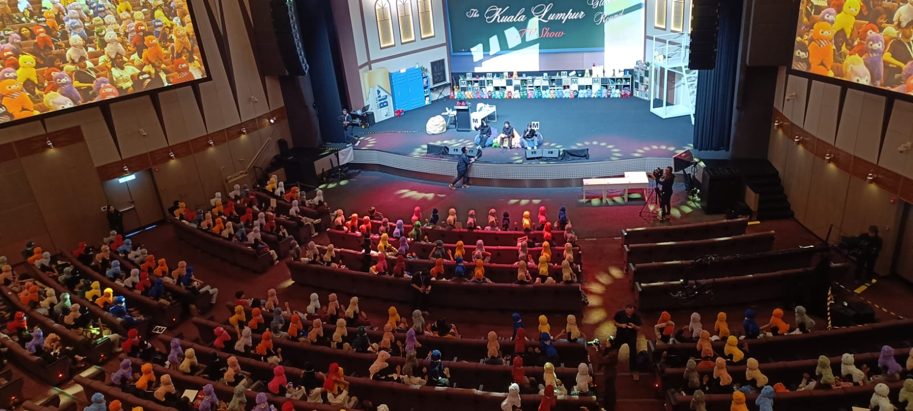
A Celebration of Learning Unlike Any Other
The World Scholar's Cup is an international academic programme that celebrates curiosity, collaboration, and critical thinking. Each season, students around the world explore a unique annual theme through six interconnected subject areas, then come together at regional and global events to compete, perform, and connect.
Every World Scholar's Cup event is inclusive and encouraging. Two-thirds of students have never debated before they join. Over half are EFL learners. The programme is designed so every student can discover a new strength.
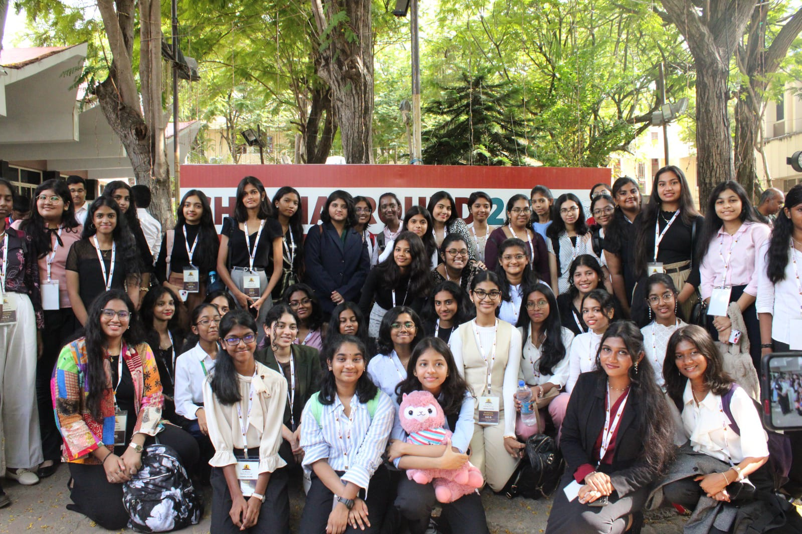

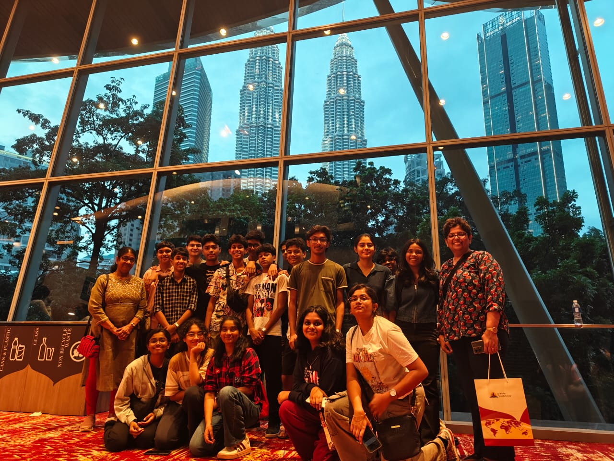
"I'm ever so glad to have attended the global WSC in 2009. It was the fulcrum which changed both my university and academic aspirations. Before leading my team I was a prospective engineer destined for only Indian higher education. Today I find myself admitted to premier institutions of liberal arts studies, aspiring to law and political science. Such has been my tryst with Scholars Cup. It has become so much more than just a topic on which to write a passionate college essay."Anirudh Sivaram, Dubai Modern High School, Yale University '14
Your WSC Journey
Regional Round
Teams of three compete at one of 12 regional rounds held across India every year. Frontiers runs regional rounds in multiple cities, making participation accessible to 200+ schools and 5,000+ students nationwide.
Global Round
Qualifying teams travel to an international Global Round. Past host cities include Bangkok, Kuala Lumpur, and Singapore, with students competing alongside peers from 70+ countries.
Tournament of Champions
The top-qualifying teams advance to the Tournament of Champions at Yale University, the spectacular season finale hosted by the Yale International Relations Association.
The Four Team Events
Every World Scholar's Cup features four exciting events that test different skills, from analytical thinking and creative writing to collaborative debate and rapid-fire knowledge.

Scholar's Bowl
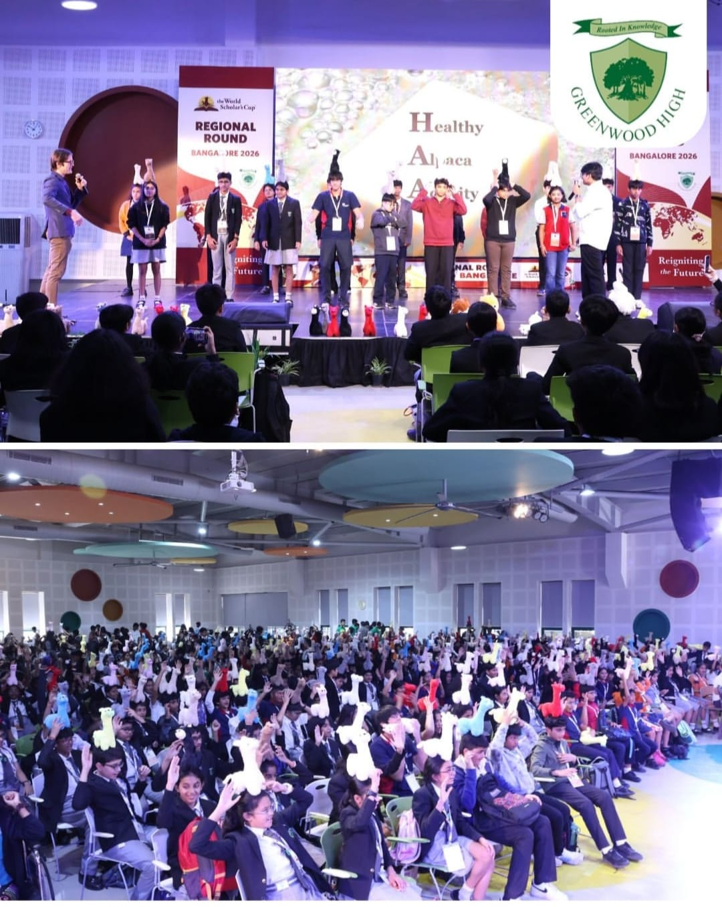
Every team in the theater. Every team with a clicker. Every question harder than the one before. Your team works together to solve analytic questions and multimedia challenges, racing the clock while other teams do the same.
It's loud, it's strategic, and it will surprise you. Don't be shocked if you're asked to connect a poem you studied to a clip from a popular TV series. Click before time runs out. Do not be deceived if you hear another team shout a wrong answer.

Collaborative Writing
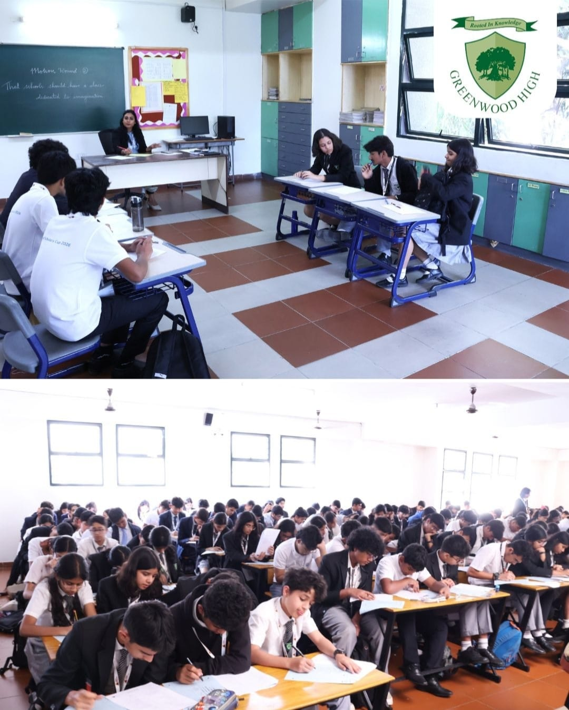
Speak with the power of your pen. Given three to four prompts across the six subject areas, from creative scenarios to persuasive arguments, each teammate writes a different one. Two simple rules: as a team write three prompts total, and each person answers a different one.
You'll prepare with teammates first (no devices), then write individually, then review each other's work. Whether you craft a poem or a five-paragraph essay, make it exciting, because that means it will excite your reader too.

Scholar's Challenge
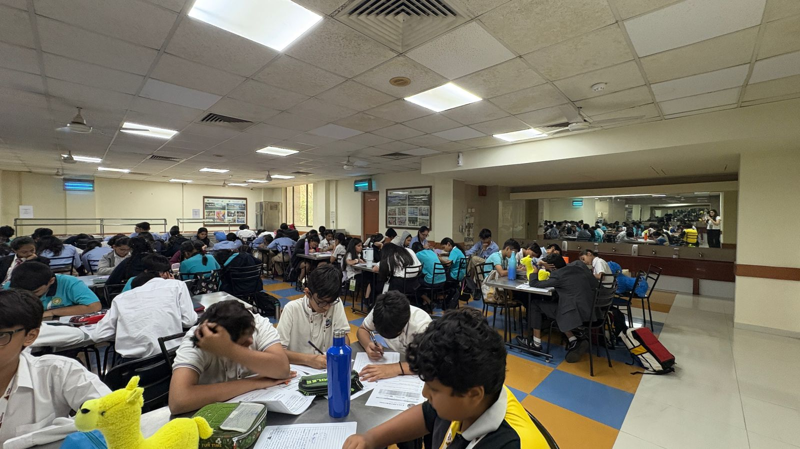
It is multiple choice, so make multiple choices. The Challenge looks like any other test, but with an alpaca-powered twist: you can mark more than one answer per question. The fewer answers you mark, the more points you earn if you're right.
Apply your knowledge across six subjects and earn medals in one, two, or all of them. Every World Scholar discovers: even if you think you're a science expert, you might win a medal in the arts.

Team Debate
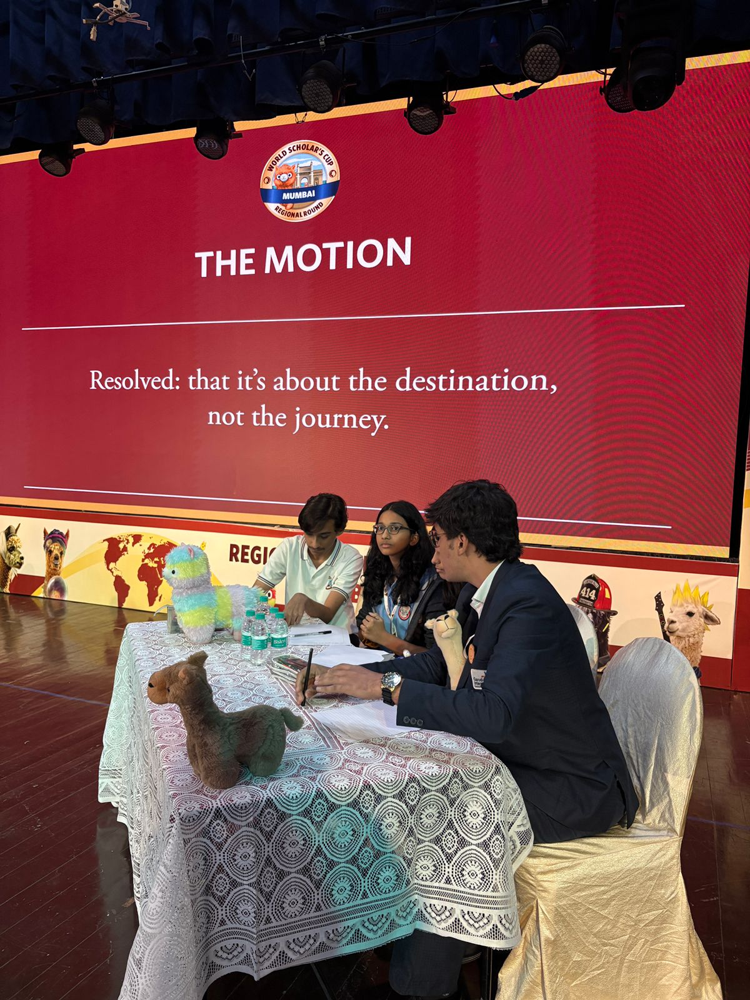
Each team debates three times, on motions across all subjects, from policy to poetry. You might argue whether parents should access school surveillance cameras, or whether women make better superheroes. Use all you've learned to make the most persuasive case possible.
You'll have 15 minutes to plan, then each person speaks for up to 4 minutes. After each round, both teams give each other constructive feedback. Two-thirds of WSC students have never debated before. For everyone, it is transformative.
Sample Debate Motions from Past Seasons
- › Parents should have the right to implant GPS trackers in their children.
- › Social media has made it easier for people to recover from their mistakes.
- › If experienced alien leaders came to Earth to help run our countries, we should let them.
- › Laws should have expiration dates.
Six Subject Areas
Every year the WSC explores a unique annual theme through six interconnected subjects. Students discover connections between disciplines they'd never imagined before.
Science & Technology
From biology to physics, technology to medicine, exploring the frontiers of human knowledge and discovery.
Social Studies
Economics, politics, geography, and society: understanding how the world is organised and how people live together.
History
The events, people, and ideas that shaped civilisation, and how understanding the past illuminates the present.
Arts & Music
Visual art, music, film, architecture, and design: the many ways humanity expresses itself creatively.
Literature & Media
Fiction, poetry, journalism, and digital media: how stories and language shape our understanding of the world.
Special Area
Each year a unique special area is introduced, offering a deep dive into an unexpected topic that ties the theme together.
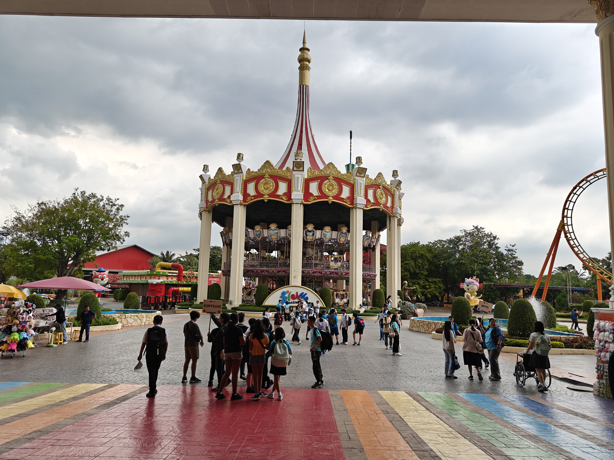
Yale University
Tournament of Champions
at Yale University
Bring together the best of the World Scholar's Cup with one of the world's leading universities, and you get our annual Tournament of Champions, hosted by the Yale International Relations Association at Yale University, New Haven.
When
Tournament of Champions 2026: November 12 to 18, 2026 at Yale University, New Haven, CT
Who Can Attend
All three scholars must have qualified at a 2026 Global Round. All students must be age 11 or older.
Yale Experience
Meet Yale faculty & students, attend a college admissions panel, eat in Yale's dining halls, and explore one of the world's most beautiful university campuses.
Iconic Highlights
The Yale Ball, Woolsey Hall, the Shubert Theatre, a campus-wide scavenger hunt and real alpacas, including Painted Warrior, the official alpaca of the Tournament of Champions.
Life at the WSC
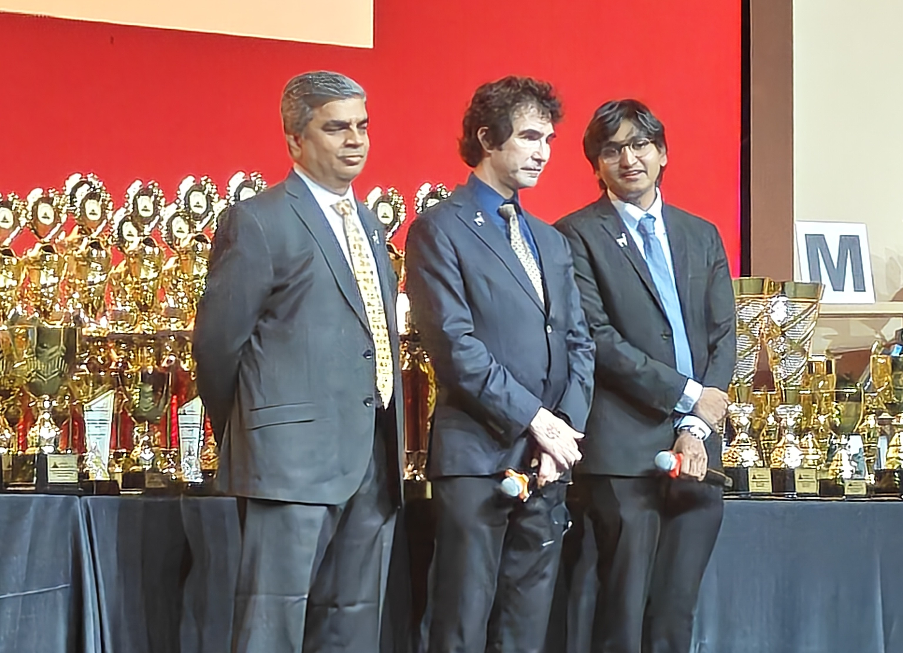
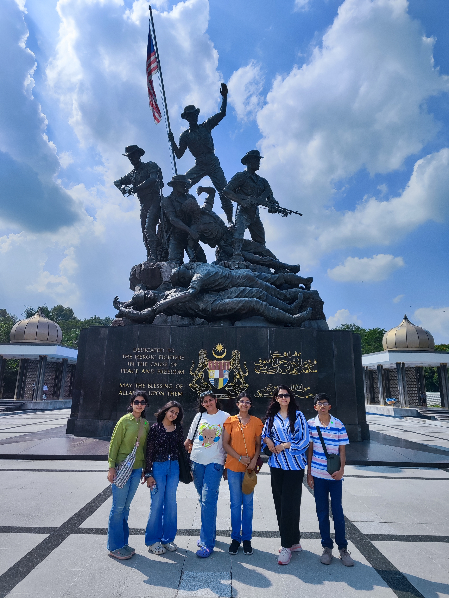

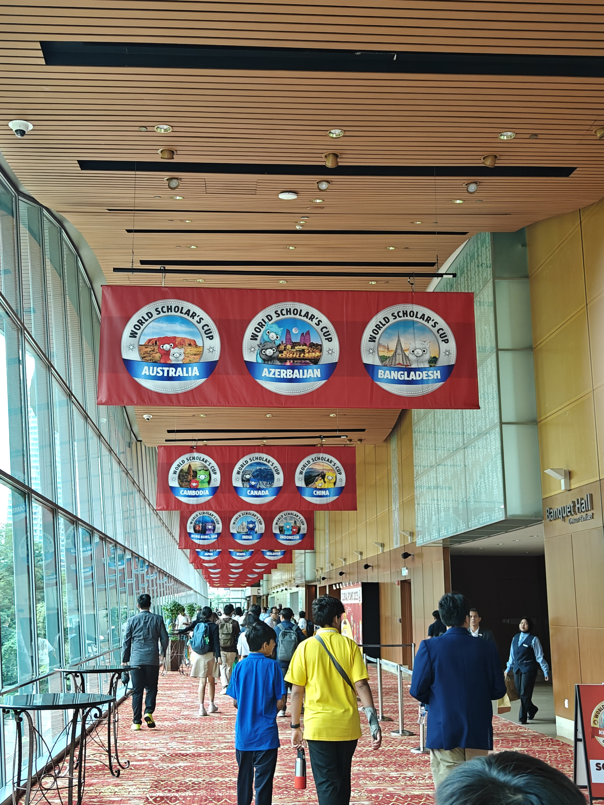
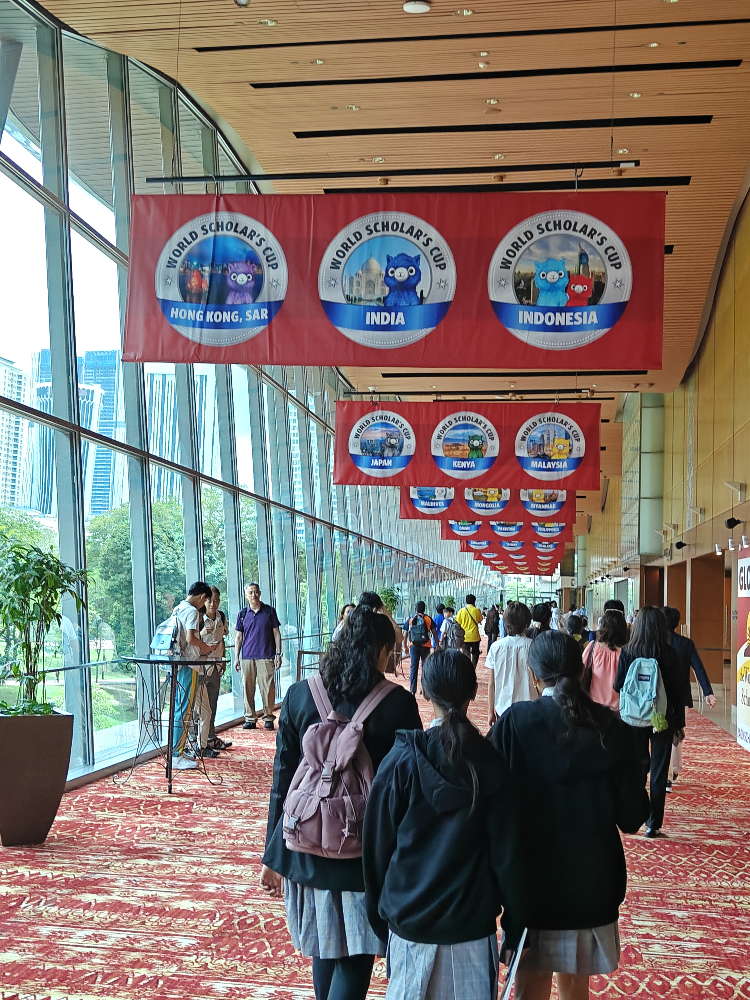
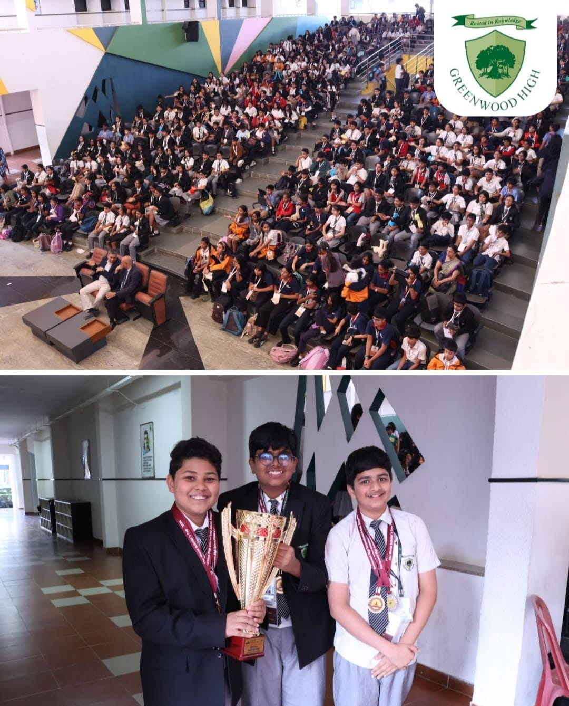
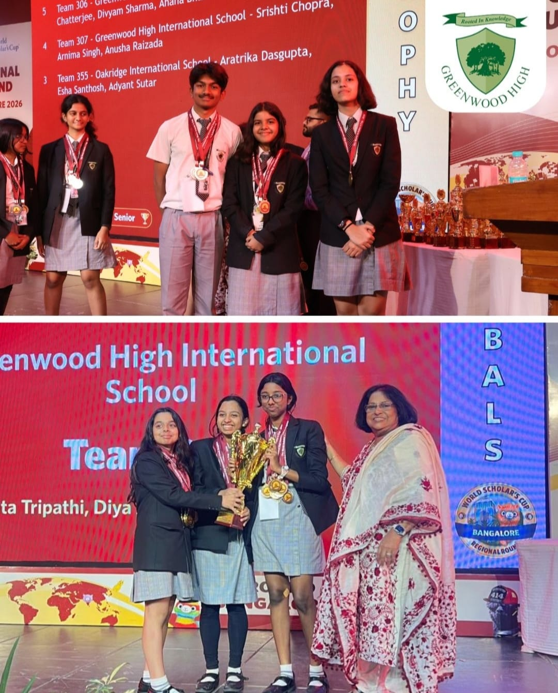
Start Your WSC Journey Today
Frontiers Education is India's exclusive partner for the World Scholar's Cup. Get in touch and we'll help your school register for the next regional round.
Contact Us